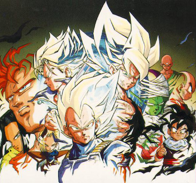
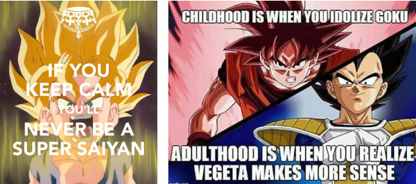
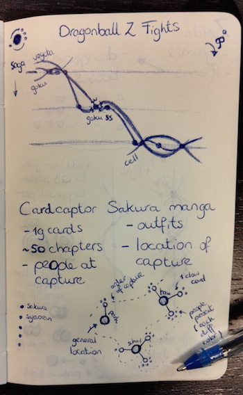
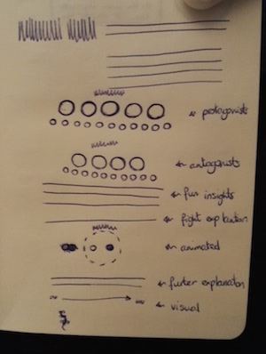
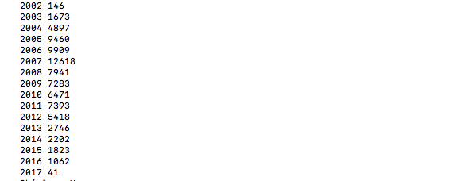
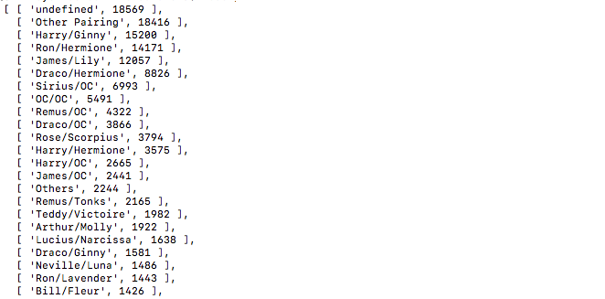

I had a few choices for this month's topic of nostalgia and I didn't know which one would provide the most interesting dataset, so I actually scoured the web a while for all topics. I loved playing Zelda, but only on the Game boy variants, especially Minish cap & the Oracle of Ages/Seasons combo. There was something about the top view that worked exceptionally well for me, whereas in the 3D games I just kept falling off bridges and running into corners. But I couldn't find any interesting data. I looked at Cardcaptor Sakura, but only the manga. I was very happy to find out they are currently doing a new series! But there was actually too little data for me to build something elaborate with (if you're familiar with the manga, there are actually only about 19 cards she collects). Neopets is where I had my first HTML & CSS experience when I was 14 (although I completely dropped it again for 10 years after I got a boyfriend and went studying Astronomy 😁 ). Since Neopets is now really only a ghost of what it was, and I found out my account was hacked and my pet stolen I wasn't in the mood to investigate that further. Which brings me to the last subject I had in mind: Dragonball Z. This anime was my very first introduction to the Japanese animation scene. Although I quickly turned solely to manga in general, I did stay loyal to DBZ and loved watching it all the way to the Fusion Saga (not sure why I stopped watching. I think I was just greatly annoyed by the Majin Buu & Gotenks character).
While randomly going through the extensive Dragonball Wikia, I learned that even though Dragonball Z was aired about 20 years ago, it's still very much alive. With Dragonball Kai now airing in the US, which is a filler-free version of Dragonball Z (and thus about 1/3 less episodes) and Dragonball Super, a brand new series taking place right after DBZ. I came across the page to each DBZ saga and saw a list all of the (major) fights that took place during that saga, in order. And that stuck immediately. It felt just so appropriate to the series to map out all of the fights that took place during DBZ; who fought who, was it anime only, any special conditions (say, fighting while in Super Saiyan "mode").
So I manually went through all ±17 sagas that comprise the 291 episodes and copy-pasted the fights into Excel (yes I do use Excel from time to time to do highly manual stuff ^^). With the help of some Excel functions to split up the fights into the separate characters and 2 more hours of manual cleaning I had a nice list of the 200 fights; who fought and were they in a special state. However, I needed the data in a slightly different order. Right now, each fight was on 1 row, but I needed each character per fight on one row. And that's where R came in. I wrote a tiny script to loop through the Excel sheet and create the final dataset.
Another "data" gathering step that came up a bit later in the process, was finding appropriate animated gifs to highlight the most special moments and fights & nice shots of the main characters for a legend. I went through hundreds and hundreds of gifs & images, trying to find some decent stuff. But I also came across some wonderful funny gifs, short comics and images. Although not the funniest I saw, the two below belong to my favorites 😆 (I definitely discovered this month that I find Vegeta a way more interesting character than I used to).
I truly don't remember how I got the idea, but almost immediately after finding the DBZ fights information I had a concept in my mind of placing each fight on a line, one after another, where each saga in the series would have its own column. Lines would then be drawn through the fights from 1 character as if that person was flying from fight to fight. The image below shows my very first sketch of the idea. At the bottom of the image you can also see the sketch I made for Cardcaptor Sakura, because at that time I was still trying to figure out which topic might have the most interesting visual result.
After deciding on DBZ I drew another image that was a bit more precise (below left). Since I already knew that I would have to create the formulas for the swooshing SVG paths myself I tried to see where to place the anchor points of the SVG Quadratic Bézier Curves (which makes the lines swoosh.
At first, I only looked at how to create the path from the first fight at the top through all other fights of the character all the way to the last fight at the bottom. This creates a path that you can stroke with a single width (there is no use filling the path, since it is not a closed path). Once I had that figured out, I looked at the result (which you can find in the code section below) and found a bit.... boring perhaps.
Instead I was looking for a way to have lines with different widths, as if pressure was being used to draw them. So I created another simple sketch (below right) that had the shape that I was looking for. I then figured out the SVG path "formula" that would be needed. It was as if I was drawing the path from top to bottom twice, but the flipping the 2nd half, so it would run from bottom to top, completing an SVG shape that I could then fill instead of stroke. This 2nd part would be slightly, randomly, offset from the first to create the appearance of a line with different widths.

One part that I was constantly struggling with (well, I struggle with it practically every month) is the overall layout, the stuff other than the visual itself. What fonts would fit this design? How to place the intro text and any legends? How to make it look a bit interesting? I have to admit I'm still not very happy with the end result, but it's the best I could come up with 😞 Maybe I just need to follow some layout design courses or something...
As you can see, this month the sketches were very basic. It's really about getting the abstract shapes on paper. Any form of design was later done while I was already programming with the actual data.
Alright I'll be honest, I conned Nadieh into doing Nostalgia for this month just so I could finally have a month for Harry Potter. Harry Potter (and Toy Story) will always have a special place in my heart: when the first movie came out, I was also 11 waiting for my Hogwarts letter. I'm the same age as Emma and Daniel, and I grew up alongside them and their movies. When the final movie came out in 2011, and the screen went to black and the theatre got up in a standing ovation, I had the distinct feeling that my childhood had ended.
Having said all that (sentimental stuff), I went through a few different ideas before ending up on my current; at first, I was thinking of doing something on Harry Potter and the Cursed Child, since I had just seen it in December, but then realized that there were probably copyright issues to the script. I then bought a Marauder's Map hoping to visualize that somehow, but got stuck trying to figure out what kind of data I could extract from it. And then one day I suddenly remembered my original November Harry Potter idea to scrape fan fiction and graph fan reactions to the movies and books.
I first got into fanfiction in middle school, when my friend showed me the first six episodes of Fruits Basket, but then couldn't get our hands on the rest of the episodes and needed a fix and found fanfiction.net instead. I then went on to Cardcaptor Sakura (SxS 4EVA), and finally to Harry Potter in my high school years. (The year I realized that I couldn't get into any of the new fanfiction being written because the grammar and plot were just too horrible, I realized I had "grown up" and wished dearly for my childhood back.)
For this data, I decided to scrape harrypotterfanfiction.com instead, because it had less stories (~80k vs. fanfiction.net's ~730k) and because it had better metadata (it has not only genres and characters, but also era and pairing). I used html2json to turn the page response into JSON, and wrote a (really brittle) parser to get each story and its metadata. I was worried that the hpff servers might time me out requesting ~3300 pages from them, but it seemed that my (brittle, synchronous) code took just enough seconds between each page that I had no such problems.
A quick first look at the data already proved interesting:  These are numbers by story publish year, which means that Harry potter fanfiction spiked in 2007 (when the final book and 5th movie came out) but have been dwindling to seriously sad numbers since. Here's another one:  Draco/Hermione is the top non-canon ship, which doesn't surprise me at all (I have this theory that the whole Draco/Hermione thing really took off after the third movie when Hermione punched Draco in the face. Great scene.)

When Shirley and Nadieh asked me to make a guest post for Data Sketches, I jumped at the opportunity but immediately panicked a little because I had agreed to the daunting task of creating something like their wonderful projects over the past six months. Whether or not that happened will be left to the reader but below is the story of how it came to be.
Unlike many of my projects, I didn't need to start by collecting data because I had already done so...three years ago. Maybe I knew one day I would do more with it. Back in 2013, when I just started getting seriously interested in the artistic side of data visualization, I did what any newly-obsessed data junky would do: I picked a familiar subject and tracked it obsessively.
Taking a step back, it's important to mention that I play a lot of Scrabble. The game has been part of my family since before I was. My grandmother has is a force to be reckoned with in the game, my father has played for ages, and both of them taught me when I was about 12 as a way to build my language and math skills. (My father was an English teacher and I was always the scorekeeper.) They never let me win and for that I'm thankful but during the early years, they were formidable opponents—and still are!
Fast forward to 2013. I decided to track the weekly games with my father—hoping to chart our scores and find interesting patterns in our playing styles. After each game, I diligently entered the score data into my own MySQL database to query and generate a bare bones dashboard.
I wish I had the foresight to track which words were played and did so for the first two games of 2014 but lost motivation because I was prolonging each game by pausing after each turn to record which word was played, where it was played, and how many points it was worth. I did take a few pictures of the final boards though:
The day I was asked to work on a project about nostalgia, one of my first thoughts was that Scrabble dataset. It was personal, made me think of good times, and was detailed enough to generate some interesting results.
My goal was to explore the variety of points earned in each turn rather than who won or lost. I enjoy working with more experimental ways of visualizing data than creating graphics that strictly inform—though I do enjoy a well-made chart.
I've never felt sketching out ideas on paper worked for me. I enjoy seeing others’ sketches and have nothing against it but I do most “sketching” in my mind and feel sketching on paper slows me down. I enjoy brainstorming with real data—either a sample or the full set—to see if my ideas are realistic before polishing them. NodeBox is great for this because I don't get bogged down with coding and I can see instant results after creating a few nodes to manipulate the data. Density Design's Raw is another tool I frequently use. With every new idea that pops in my head, I save a new version so my “sketches” are reusable and adjustable if I want to examine a new direction based on an earlier version.
My first idea was to take the turn-by-turn step charts from my original dashboard and overlap them to see if any general trends emerged beyond the obvious. Seeing the result was personally satisfying but not very visually interesting. I left it be without bothering to add the steps.
Next, I wanted to see exactly when I played Scrabble throughout the year so I made an ugly but informative "date wheel" just showing dates of each game. I was surprised to see the large gaps since I thought we played just about every week. Some were expected like when I took vacations with family but the two in late winter/early spring were unexpected. I think those gaps were when my father was traveling at conferences or visiting friends.

The next logical step was to combine the first two sketches and see the turn-by-turn charts on the date wheel. The image below shows that but confused me at first because the gaps weren't in the same spots as before. Then I realized that the lines weren't straight but angled at about 45 degrees from each point—so they were in the correct spots but the angles shifted the gaps. This version reminded me of those plasma globe toys.
Differentiating games from one another was difficult so I created straight spokes around the wheel with circles representing each turn, color-coded by player and sized based on how many points were earned. Distance from the center corresponded to which turn was played (first turn closest to the center, last turn farthest). The results were genuinely interesting but reminded me too much of a previous project I created so I didn't pursue it much. The gaps for when I didn't play also started to get distracting.
However, creating this version resulted in a reusable setup for NodeBox for parsing my data using network nodes. Using a single flat dataset, I could now easily parse each game, each player, and each turn.
Once I had a reusable setup, I quickly created a version of the charts from my original dashboard just to see if I could. Without adding steps, the result was lots of wiggly lines. I would eventually come back to this version occasionally to play with this more.
Looking for a different approach, I created plainer design focusing on the process of inching toward a final score. This version showed each game as a group of horizontal lines with dots spaced out based on the points earned during each turn. I liked the relative even distribution but it was too busy and difficult to differentiate games and even players.
The next version is where I finally started seeing potential. Instead of fitting all turns from all games on a single spoked wheel, I created separate spoked wheels for each game. Each turn is a spoke and reading clockwise from the top, a dot color-coded by player is positioned farther from the center the more points were earned. I really liked seeing the wide variety of each game and where big plays were made—likely with bingos (playing all seven tiles at once in a turn). This would eventually become the basis for one of the final visuals.

Still looking for more ideas, I decided to try an idea based on Stephanie Posavec's Writing Without Words project where wandering paths were created by drawing lines between points following a simple algorithm: draw a line for the first turn based on points earned, turn 90 degrees, and draw another and repeat. I loved this idea when I first saw Stephanie's project. It can be easily applied to so many topics with fascinating results. Applying it to Scrabble games produced very fun results and I decided to use them in one of the final visuals.
In an attempt to build on the wandering paths, created a quick-and-dirty variation that drew lines based on a ping-pong like algorithm: draw a line pointing left or right and alternate between the two moving up with every turn. The results weren't great but I saved the idea nonetheless.
After feeling a little maxed out with NodeBox, I threw the data into Raw to see what there was to see. I created a couple treemaps of points per game color-coded on a linear scale and color-coded by player. I also created a bump chart showing ranking of players for the entire year.
I knew I wanted to use the spoked wheel design so I experimented with different ways of trying to combine them into one giant graphic resembling fireworks. I also started playing with different color ideas. In these combinations, the distance from the common baseline of an entire game is based on how many total points were earned that game. (More points = farther from baseline.)
NodeBox has a node for creating stars and just for fun, I replaced the dots with stars and configured the number of points on the star to correspond to the number of points earned on a turn, which resulted in a fuzzy appearance. It was a little silly but I liked it.
The more I played with a giant graphic, the more I realized that while it was appealing in theory, the details were lost and there was too many overlapping points—even when using a horizontal baseline instead of a radial one.
I wanted to find a different way of arranging the games and remembered that for an earlier project, I found Packomania when looking for a way to tightly arrange circles in a specific shape. This site offers a mindboggling number of diagrams showing how circles of varying or consistent sizes can be packed into squares, circles, and other shapes when the number of circles from just a few to over two thousand. The best part is that each diagram is available in a PDF with the original vector shapes. This is an incredibly valuable resource for people like me who don't feel like coding packing algorithms.
NodeBox supports importing SVGs so it's possible to use one of these diagrams to use as a guide for placing shapes. Here's the general process:
At this point, it was just a matter of finding a symmetrical arrangement of 47 circles that I liked and that would fit well on a screen. After manually moving circles around in Illustrator for longer than I care to admit, I found a good arrangement. I also used the connect node to draw a faint line connecting all the centroids to illustrate the path from beginning of the year to the end. The same arrangement was used for both main visuals.
Below are the NodeBox configurations for the two main visuals.
I knew I wanted to keep the original stepped line charts for a more analytical view of how games unfold as a type of appendix. These were created with Highcharts. Highcharts is my go-to tool for creating charts because it's relatively easy for me to use and I can focus more on how the charts look without worrying how they work under the hood. I really enjoy customizing the options to configure the colors, data, how they behave, and more—mostly because its documentation is some of the best I've seen with good explanations, easy navigation, and working examples of almost every option.
The final result is a visual experiment of one of many years of Scrabble that I hold dear. I can't remember every game I've played but looking at the visuals helps me remember the excitement of surging ahead with a bingo or the slogging along with a rack full of vowels playing turns worth only a few points.
Analyzing these games has helped me fondly remember a time when I looked forward to my weekly visit with my parents to have dinner and play a good game of Scrabble. Geography may separate us now but I still play with my father twice a week and we're still just as dedicated to the game as we ever were.
{kind=link}
{kind=link}
{kind=link}
{kind=link}
{kind=link}
{kind=link}
{kind=link}
{kind=link}
{kind=link}
{kind=link}
{kind=link}
{kind=link}
{kind=link}
{kind=link}
{kind=link}
{kind=link}
{kind=link}
{kind=link}
{kind=link}
{kind=link}
{kind=link}
{kind=link}
{kind=link}
{kind=link}
{kind=link}
{kind=link}